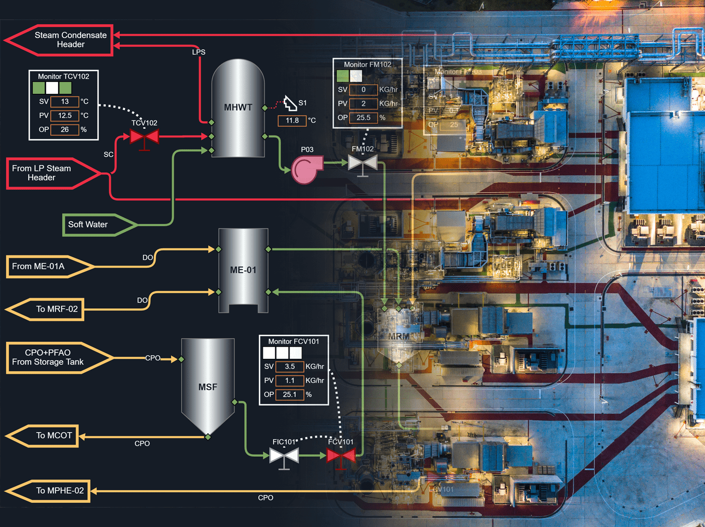
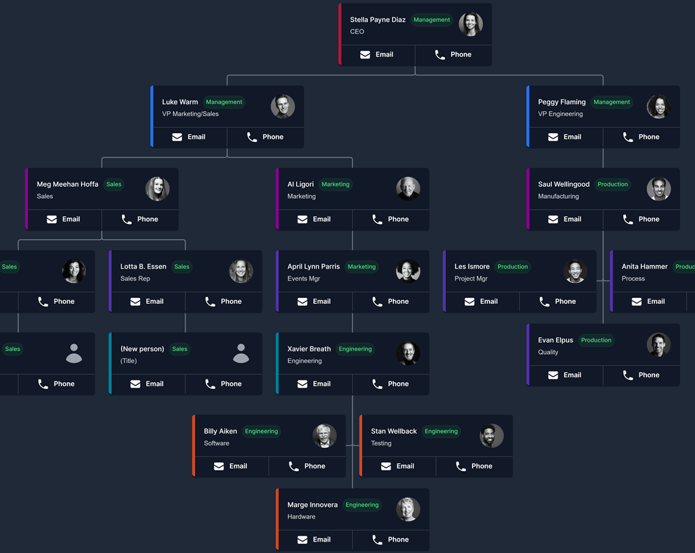

Interactive diagramming
for every industry
GoJS is the library enterprises embed to build interactive org charts, flowcharts, monitors, BPMN, SCADA, and custom visual editors. Trusted since 2011, GoJS is used to monitor power plants, organize warehouse operations, visualize teams and security, and more.


June 2026: GoJS 4.0 released!

Industrial Diagrams
GoJS is ideal for industrial monitoring and control systems. Create SCADA tools, visualize flow, and see your processes more clearly.
Organize processes
Visualize and monitor critical assets across domains
- Build dashboards, operator consoles, and visual editors that run for years in production.
- GoJS makes it easy to create industrial process automation, control, and monitoring tools for your organization.

Org charts
Create classic org charts. Leverage GoJS to allow users to easily interact with their org charts, editing relationships, collapsing levels, and more.
Represent relationships
Develop interactive org charts, trees, and hierarchy diagrams
- Use automatic layouts to easily modify the way relationships are displayed.
- Let end-users edit diagrams in-place: drag, reconnect, or update data with full undo/redo.
- Collapse different levels of your trees and sub-graphs to bring focus where it's needed.
Shipped by Fortune 500s and startups alike
Including industrial planning, security, organization management, consumer apps, and more.


Talk to the developers who built it
Northwoods Software has supported diagramming libraries for over 25 years. When you register an evaluation, the same engineers who write GoJS will help you scope your proof-of-concept, design templates, and unblock integration issues.
Start a supported evaluationDevelop faster
The things you'd have to build yourself: already built, tested, and documented
- Automatic layouts
Built-in layouts, and many samples of custom layouts to use or adapt.
Learn more →- Node and link templating
Quickly set the look for your diagram parts while keeping appearance separate from data.
Learn more →- Data binding
Automatically keep your data in sync with your display, and vice versa.
Learn more →- Undo & redo
Full transactional undo/redo, including cancelled drag and edit operations.
Learn more →- Keyboard shortcuts
Use common keyboard commands and gestures, which can be customized.
Learn more →- Subgraphs
Groups provide subgraphs to apply different rules or layouts to their members.
Learn more →- Extensible tools
Override or subclass any built-in tool (drag, resize, link-draw) to match your app's interaction model.
Learn more →- Customizable events and permissions
Execute custom logic or notifications when users perform certain actions or key presses, or disable different interactions altogether.
Learn more →- Context menus and tooltips
Context menus and tooltips are built-in, and can be extended in-canvas or with HTML.
Learn more →
Zero dependencies. Use it anywhere.
GoJS is a self-contained library with zero dependencies. Drop it into React, Vue, Angular, Svelte, Electron, or vanilla JS. GoJS can also be used server-side for async layouts, testing, and image creation.
- Angular

- Check out our other component library, gojs-angular, and get your Angular diagrams up and running. Learn more →
Extensive documentation
- Explore
- Start from over 200 sample apps that demonstrate flowcharts, org charts, mind maps, UML diagrams, BPMN diagrams, graph editors, data visualization, custom tools and layouts, and much more. View samples →
- Learn
- An illustrated tour of GoJS concepts, with hundreds of live, editable code examples embedded directly in the docs. See learn pages →
- API documentation
- Read our comprehensive documentation for an in-depth reference of the entire library. View API →